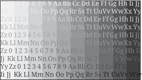

Several window properties control how Screen displays your window buffer(s) (source image).
You can manipulate what part of your window buffer is displayed, as well as where it appears on your display by setting one or more sets of specific window properties.
The properties that you set to achieve the resulting display depend on whether you are the parent or owner window. Parent and owner windows can set only certain properties each. So, depending on which property you have access to, you need to set different properties to achieve the display that you want. The following table describes these properties and lists the sections that best show how they are used:
| Window property | Description | Section |
|---|---|---|
| SCREEN_PROPERTY_BUFFER_SIZE |
The width and height, in pixels, of your window buffer; typically set by the owner window (defaults to the display size). |
|
| SCREEN_PROPERTY_CLIP_POSITION |
The x and y positions of the top left corner of your clip rectangle relative to your parent window; typically set by the parent window (defaults to (0, 0)). |
Zooming in (from the window's parent) |
| SCREEN_PROPERTY_CLIP_SIZE |
The width and height, in pixels, of the rectangle relative to your parent window that you want to clip. This clip rectangle is the area of your window that you intend to display and is typically set by the parent window (defaults to INT_MIN). |
Zooming in (from the window's parent) |
| SCREEN_PROPERTY_POSITION |
The x and y positions, relative to the parent, of the top left corner of your window; typically set by the parent window (defaults to (0, 0)). |
|
| SCREEN_PROPERTY_SIZE |
The width and height, in pixels, of your window; typically set by the parent window (defaults to the buffer size). |
|
| SCREEN_PROPERTY_SOURCE_CLIP_POSITION |
The x and y positions of the top left corner of your source clip rectangle relative to your window buffer; typically set by the owner window (defaults to (0, 0)). |
Using a source clip rectangle |
| SCREEN_PROPERTY_SOURCE_CLIP_SIZE |
The width and height, in pixels, of a rectangle relative to your window buffer that you want to clip. This source clip rectangle is the area of your window buffer that you intend to display and is typically set by the owner window (defaults to the buffer size). |
Using a source clip rectangle |
| SCREEN_PROPERTY_SOURCE_POSITION |
The x and y positions of the top left corner of your source rectangle relative to your window buffer; typically set by the owner window (defaults to (0, 0)). |
|
| SCREEN_PROPERTY_SOURCE_SIZE |
The width and height, in pixels, of a rectangle relative to your window buffers. This source rectangle is the area that you intend to display. The size of your source rectangle may extend beyond the size of your window buffers and is typically set by the owner window (defaults to the buffer size). |
Refer to Screen property types for more information on these window properties.
The following sections provide examples on how to:
Unless otherwise specified, all examples use the following:
| Window buffer size | 1280x720 |
| Display size | 1280x720 |
| Source image size | 1280x720 |
| Source image |
 |
In the examples, some of the rectangles are shown in a different color. The intention is to help distinguish them from the other rectangles in each of the figures. For example, the source and clip rectangles are usually shown in a different color than the window and display.